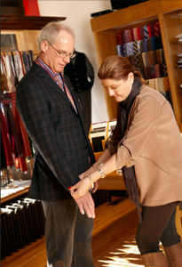
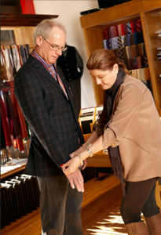

HOURS: M - F 9 TO 6 | SATURDAY 9 TO 3:30 | CLOSED ON SUNDAY
HOURS: M - F 9 TO 6 | SATURDAY 9 TO 3:30 | CLOSED ON SUNDAY
At Lucca we are committed to a level of personal attention and service that is rarely found in today's fast-paced world. You will still find it in Italy, with its warm, generous and welcoming people. And you will find it at here alongside our fine men's clothing, at the hands of Dar Boyër, who has been serving discerning customers with dedication, energy and expertise for more than 35 years.
Custom Suits
Tailoring
Repair
The moment you walk through the door at Lucca, you feel the spirit of that remarkable city in Tuscany. You immediately see our commitment to excellence in the quality of our clothing. Just as important, and in the tradition of the devoted merchants of Lucca, you experience our dedication to unparalleled personal service.
Whether you need a suit for a special occasion, business attire to complement your professional wardrobe, or a few casual items, we will give you the individual attention you deserve until you find exactly what you want.
 

If it is a custom fit you are looking for, we will make sure that your fine men's clothing is perfectly tailored to your build and your sense of style. At Lucca, we understand you expect the best - the finest quality clothing and the highest level of personal service. Come visit us on Monroe Street so that we can deliver the best of both to you.
1904 Monroe St.
Madison, WI 53711
Phone:608.280.0653
Email: Email Us!